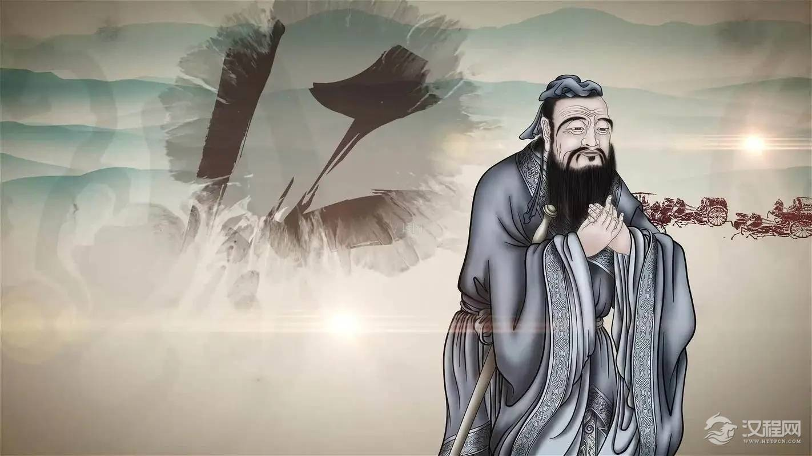
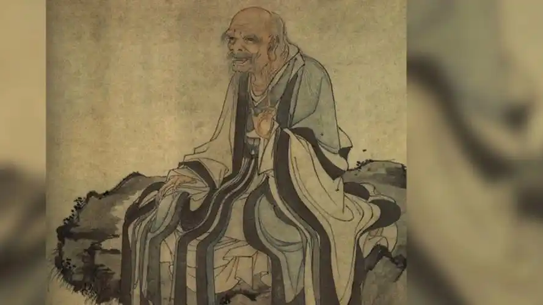
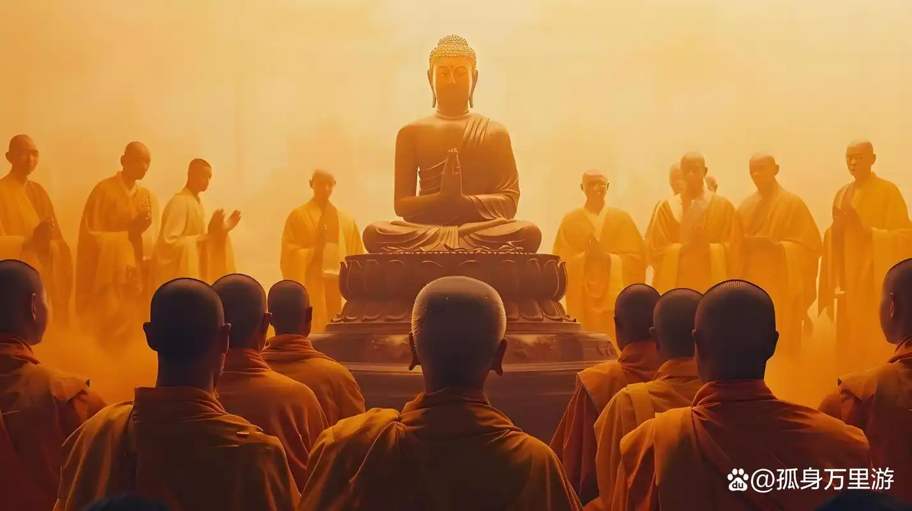

Introduction to Traditional Chinese Culture
Chinese traditional culture has a long and rich history, accumulating five thousand years of wisdom and civilization. With Confucianism and Taoism as the core, it emphasizes philosophical concepts such as "benevolence", "the Doctrine of the Mean", and "unity of man and nature". In the field of art, calligraphy, traditional Chinese painting, opera, poetry, and other forms possess a unique Eastern charm; Festival customs such as Spring Festival, Mid Autumn Festival, and Dragon Boat Festival carry profound connotations of family reunion and natural timing; Food culture emphasizes the harmony of the five flavors, with tea ceremony, porcelain, silk, and other symbols of Chinese civilization. In addition, traditional Chinese medicine, martial arts, Go and other skills still have a profound impact worldwide. Chinese traditional culture not only shapes the spiritual character of the Chinese nation, but also contributes unique value to world civilization.
Classification of Traditional Chinese Culture
01
philosophical thought
Confucianism (Confucius, Mencius), Taoism (Laozi, Zhuangzi), Buddhism (Zen) and other ideological systems.
02
Literature and Art
Poetry and songs (Tang poetry, Song lyrics), classical novels (Four Great Classical Novels), calligraphy, traditional Chinese painting, opera (Peking Opera, Kunqu Opera), etc.
03
Festivals and Folklore
Traditional festivals (Spring Festival, Dragon Boat Festival, Mid Autumn Festival), solar term culture, folk beliefs, marriage and funeral customs, etc.
04
Etiquette and Ethics
Traditional etiquette (sacrifice, bowing), family traditions and teachings, filial piety culture, and the way of a gentleman.
05
Technology and Skills
The Four Great Inventions (paper making, printing, gunpowder, compass), Chinese medicine, martial arts, ceramics, silk, tea ceremony, etc.
06
Architecture and Landscape Architecture
Traditional architectural styles such as palaces (Forbidden City), gardens (Suzhou Gardens), residential buildings (quadrangle courtyards), temples (Shaolin Temple), etc.
Philosophical Thought
-

Confucianism - The Ethical World of Rites, Music, Benevolence, and Harmony
Confucianism is founded by Confucius (551 BC -479 BC), with "benevolence" as its core, emphasizing "self-restraint and restoration of propriety as benevolence" (Analects), and advocating for achieving social harmony through moral cultivation. Mencius developed the theory of "good nature" and put forward the people-oriented idea of "valuing the people over the ruler"; Xunzi advocated the theory of "evil nature" and attached great importance to the education of etiquette and law.
-

Taoist Thought - The Wisdom of Life Following the Way of Nature
Represented by Laozi's (approximately 6th century BC) Tao Te Ching and Zhuangzi's (approximately 369-286 BC) Nanhua Jing, they advocate for "humans following the earth, the earth following the heavens, the heavens following the Tao, and the Tao following nature," emphasizing adherence to laws rather than forced intervention.
-

Buddhist Thought - The Path to Enlightenment of Dependent Origination and Emptiness
After Buddhism was introduced to China during the Han Dynasty, it merged with local culture to form Han Buddhism. Zen Buddhism (represented by the Sixth Patriarch Huineng) has the most Chinese characteristics, advocating for "understanding the mind and nature" and "enlightenment to become a Buddha".
Photo Wall